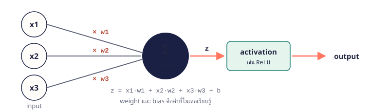

18.1 neuron: หน่วยคำนวณพื้นฐาน
neuron รับ input หลายค่า คูณแต่ละค่าด้วยน้ำหนัก (weight) รวมกันแล้วบวก bias ได้ค่า z จากนั้นส่งผ่าน activation function ได้ output weight และ bias คือค่าที่โมเดล “เรียนรู้”

import numpy as np
x = np.array([2.0, 1.0, 3.0]) # input
w = np.array([0.5, -1.0, 0.25]) # weight
b = 0.1 # bias
z = x @ w + b # x1*w1 + x2*w2 + x3*w3 + b
print(f"z = {z:.2f}")z = 0.85
จำง่าย ๆ @ คือ dot product: คูณทีละตำแหน่งแล้วรวม